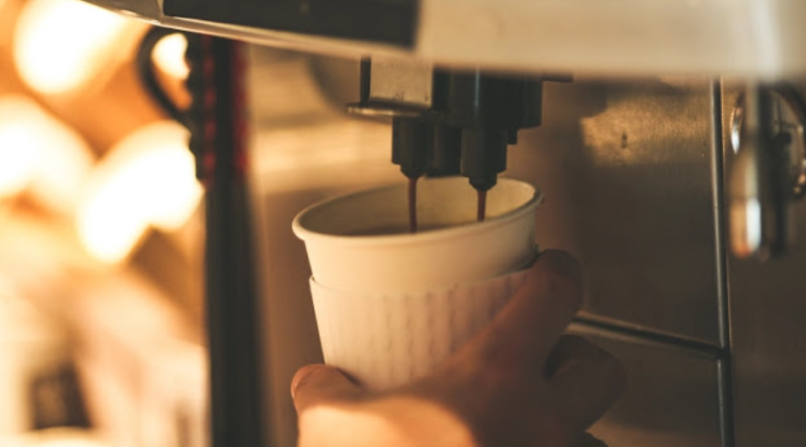

A good cup of coffee in the morning can set the mood for your whole day. But when the coffee shops are closed, relying on a barista to serve your daily cup may not be an option for you. If that's the case, you might be looking to brew a good cup yourself. And, depending on the amount of coffee you drink a day, it could also save you some cash. With these nine simple rules, you'll be able to make your own perfect cup of coffee every morning, right in your own home.
